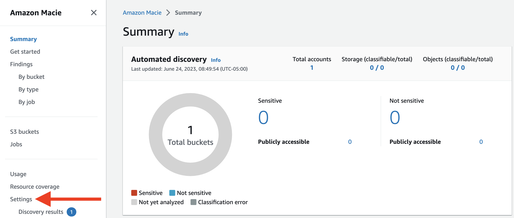

AWS
Initialize an AWS Account
Important
Even when using a free-tier cloud account, AWS charges a small amount for some of the resources we will be creating in this workshop. You should expect a negligible bill for the resources you create in this workshop. To guarantee that additional bills will not accumulate, consider closing your account at the conclusion of the workshop.
You must not use a cloud account with existing personal or corporate resources. We will be uploading sensitive files that should not be in production environments.
-
Browse to the AWS Web Console.
-
If you have not created an account already, sign up for a new account now.
-
Press the Create a New AWS Account button.
-
Fill out the form to sign up for a new free tier account.
-
-
Sign in with the root account's username (email address or mobile number) and password, and then press the sign in button.
-
After signing in, the console will redirect to the home screen where you can browse the available AWS services.
Create an S3 Bucket and Upload the Mock Data
-
In the AWS Console, type S3 in the search bar and click the first result:
-
Click Create bucket:
-
Give the bucket a globally unique name, such as sans-multicloud-data-workshop-**YOUR_NAME**. If the resulting bucket name is more than 63 characters, please abbreviate:
-
Scroll to the bottom of the page, do not change any settings, and click Create bucket:
-
Click on the newly created bucket:
-
Click Upload:
-
Click Add files, select the MOCK_DATA*.csv files generated earlier, and click Upload:

Create a Macie Job
-
In the AWS Console, type Macie in the search bar and click the first result:
-
Click Create job:
-
Refresh the results until you see your newly created bucket. Then, select it and click Next:
-
Click Next again to go to Step 3. In a real environment, we would likely want to continuously audit for sensitive data on a schedule. However, for this workshop, we only need to scan on-demand. Select One-time job and click Next:
-
Click Next three more times without changing any settings. Then, give the job any name you want (e.g., Test), click Next, scroll down to the bottom of the page, and click Submit:
-
This job will take roughly 10-15 minutes to complete. Refresh periodically until the Status goes from Active (Running) to Complete. If desired, you can move onto another cloud provider in the workshop in the meantime. Then, click Findings on the sidebar:
-
Click on one of the findings and look at the sensitive data detected:
-
Click on the number next to Name under Personal information to see which cells it flagged as containing names.
We can make a couple of interesting conclusions based on these results:
- Despite the fact that our first two spreadsheets contain 1,000 full names, Macie found far fewer.
- Macie only believes that some of these "names" are names based on the names it has seen previously. For example, we found that it detected the common name "Ian", but not the less common name "Elsy". This indicates that Macie may be less effective at finding names not commonly used in the United States. In fact, Amazon Macie's documentation states that it is "limited to Latin character sets".
- Macie appears to be evaluating each chunk of data independently of the context. Given that the second column is called "first_name", it is obvious to a human that the entire column should be treated at least as sensitively as a first name.
- Macie is not considering the "email" values to be sensitive.
- Most critically, Macie is not flagging ICD-10 Diagnosis Codes as sensitive. While these codes are not considered Personal Health Information (PHI) by itself, coupled with names, this information is highly private.
Refine the Job
Let us create a custom identifier to detect the ICD-10 Diagnosis Codes in our second spreadsheet.
-
Create a new job, repeating all of the same steps until reaching Step 4. Then, click Manage custom identifiers:
-
In the newly opened window, click Create to create a new custom data identifier:
-
Give the custom data identifier the name ICD-10 Diagnosis Code and paste the following (Source) into the Regular expression field:
[A-TV-Z][0-9][0-9AB]\.?[0-9A-TV-Z]{0,4} -
To confirm our RegEx works, paste these five CSV records into the Sample data section and hit Test
id,first_name,last_name,email,gender,ip_address,diagnosis_code,ein,favorite_movie,favorite_movie_genre 1,Moshe,Tolefree,mtolefree0@imageshack.us,Male,111.207.126.6,G3185,49-6935923,A Flintstones Christmas Carol,Animation|Children|Comedy 2,Jacqui,Harbour,jharbour1@home.pl,Non-binary,152.80.84.54,T43693,44-6915050,Forgotten Silver,Comedy|Documentary 3,Koo,Readitt,kreaditt2@tripadvisor.com,Female,25.241.0.38,S061X2A,49-5315541,"Alamo, The",Drama|War|Western 4,Annetta,Moultrie,amoultrie3@msu.edu,Female,214.224.120.104,H6123,62-5428600,Nine Ways to Approach Helsinki (Yhdeksän tapaa lähestyä Helsinkiä),Documentary 5,Oralie,Halversen,ohalversen4@networksolutions.com,Female,239.220.166.49,S52501S,79-7959398,Those Awful Hats,Comedy -
You should get 5 matches. Then, click Submit:
-
Return to the original window. Hit the refresh button, select the newly created identifier, and click Next:
-
Click Next two more times without changing any settings, give the job any name, click Next, scroll down, and click Submit.
-
This job will also take roughly 10-15 minutes to complete. Refresh periodically until the Status goes from Active (Running) to Complete. If desired, you can move onto another cloud provider in the workshop in the meantime. Then, analyze the findings like before. Did you get the results you expected?
Terminate Cloud Resources and Instance
Disable Macie
-
In the AWS Console, return to Macie and click Settings:

-
Scroll to the bottom of the page, click Disable Macie, and confirm:
Delete S3 Bucket
In the AWS Console, return to S3, select the bucket used in this workshop, Empty it, then Delete it:
Close Account
To guarantee that additional bills will not accumulate, consider closing your account at the conclusion of the workshop. Alternatively, feel free to keep this account for future testing.